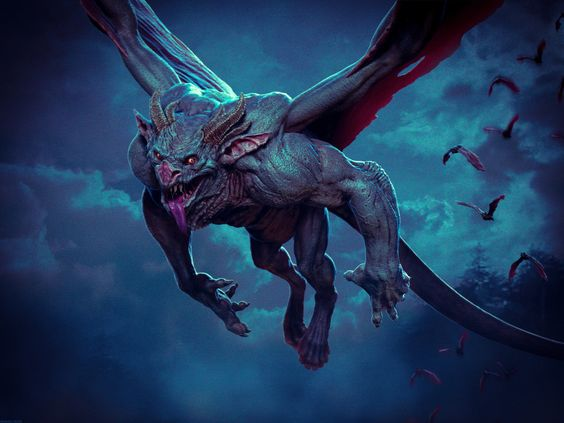

Force

Résistance
Dextérité
Magie

Ingénierie


Environnement : Tertres-du-Temps - Crocs-du-Temps & Ancienne-Rowia
Durée de vie moyenne : 300 ans, cause de la perte en pureté de sang, seuls quelques vampires étant encore immortels
Taille : M
Système politique : Oligarchie aristocratique
Statut politique : Au service de Ga'ar et possiblement de familles vampires aristocratiques
Relations hostiles : Anges - Archanges - Ysiiri
Alliés : Aucun défini, mais peuvent faire alliance avec tous les peuples sous les ordres de Ga'ar
Croyance : Ga'ar
Force
Résistance
Dextérité
Magie
Ingénierie
Capacités innées : Régénération, capacités physiques accrues, possibilité de transformer un individu en vampire
Facilités magiques : Aucune, magie énormément restreinte
Points faibles : Ail, argent, lumière du soleil, pieux
Impossibilités : Lumière et magies pures
Les vampires sont des êtres maudits quasiment immortels qui naquirent lors de la première apparition de Ga'ar, a fortiori témoignant d'une allégeance sans faille à ce dernier.
Profil type : Palabreur - Chic - Charmeur - Sanguin - Dirigiste
Alimentation : Sang, de préférence humain
Montures : Gargouilles façonnées par leur maître
Le premier des attributs leur étant associé est la longueur de leurs canines étant particulièrement pointues. C'est avec ses dernières qu'ils mordent leurs victimes à la base du cou afin de se délecter de leur sang. Effectivement, leur alimentation est grandement constituée d'une nécessité à consommer du sang animal ou humain ce qui créa la lugubre réputation de cette race. La morsure permet aussi, sous la volonté du mordeur de transformer un individus lui-même en vampire, la seule condition étant que la victime soit humaine.
Outre ceci, les vampires ont une capacité de cicatrisation supérieure apte à faire repousser un membre démantelé, il est d'ailleurs bon de noter que leurs excroissances dentaires sont la seule partie de leur corps ne se régénérant pas sur le long terme, les condamnant alors à la mort.
Témoignant d'une agilité folle et de capacités physiques accrues, les représentants de cette race sont redoutables au combat rapproché mais demeurent inaptes à l'utilisation d'une magie trop puissante. Ajoutez à cela que la lumière du soleil leur est désagréable, créant des brulures sur le court terme et capable de les réduire en cendre sur une durée plus étalée ainsi que la possibilité d'être tué par un pieux planté dans le cœur. Pour finir, les lames d'argent infligent des dommages difficilement cicatrisables pouvant laisser des lésions sur des mois, voire des années.
Si la durée de vie des vampires n'est plus éternelle, c'est à cause de la perte de pureté de sang due aux reproductions avec les humains. Si les deux races viennent à se reproduire, alors un demi-vampire naîtra, ce dernier aura une forte dépendance au sang mais pourra se contenter de sang animal, il n'aimera que peu la lumière mais la supportera et ses avantages de race seront réduits au néant ou presque, conservant juste une faible régénération des blessures physiques.
Nombre d'OC de cette race sur Yndrill: -